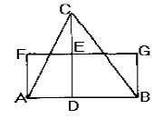
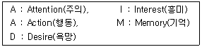

시각디자인산업기사 (2002-03-10 기출문제)
1과목: 색채학
1. 망막이 강한 자극을 받게 되면 시세포의 흥분이 중추에 전해져서 색감각이 생기는 현상은?
- 대비
- 반전
- 색각
- 잔상
(정답률: 알수없음)

2. 다음 중 파장이 가장 짧은 색은?
- 빨강
- 보라
- 초록
- 노랑
(정답률: 알수없음)
3. 먼셀(Munsell)의 기본 명암단계는 검정과 백색을 제외하고 몇 단계로 되어 있는가?
- 9단계
- 7단계
- 14단계
- 12단계
(정답률: 알수없음)
4. 흰종이 위에 흑색 글씨가 황색 글씨보다 휠씬 눈에 잘 보이는 것과 관련 있는 것은?
- 수축성
- 기호성
- 명시성
- 항상성
(정답률: 알수없음)
5. 흰색지를 한동안 보다가 회색지(N4)를 볼때, 회색지의 느낌은?
- 더욱 고명도로 보인다.
- 더욱 고채도로 보인다.
- 더욱 저명도로 보인다.
- 더욱 저채도로 보인다.
(정답률: 알수없음)
6. 빨강과 청록 또는 노랑과 보라의 배색에서 가장 크게 느껴지는 대비는?
- 보색대비
- 인근색대비
- 명도대비
- 색상대비
(정답률: 알수없음)
7. 방의 크기를 좀더 크게 보이기 위한 배색으로 가장 적합한 것은?
- 전진색이며, 어두운 계통색
- 후퇴색이며, 밝은 계통색
- 후퇴색이며, 어두운 계통색
- 전진색이며, 밝은 계통색
(정답률: 알수없음)
8. 색채조화의 공통되는 원리가 아닌 것은?
- 질서의 원리
- 수축 팽창의 원리
- 유사의 원리
- 대비의 원리
(정답률: 알수없음)
9. 색채조절의 목적으로 가장 적합 한 것은?
- 눈의 긴장감을 주기 위해서
- 심리적 반응의 효과를 얻기 위해서
- 마음의 안정과 일의 능률을 올리기 위해서
- 전달감을 찾기 위해서
(정답률: 알수없음)
10. 다음 중 색의 3속성은?
- 청색, 탁색, 명색
- 빨강, 파랑, 노랑
- 진출, 후퇴, 팽창
- 색상, 명도, 채도
(정답률: 알수없음)
11. 먼셀기호 5B 8/4, N4에 관한 다음 설명 중 맞는 것은?
- 유채색의 명도는 5 이다.
- 무채색의 명도는 8 이다.
- 유채색의 채도는 4 이다.
- 무채색의 채도는 N4 이다.
(정답률: 알수없음)
12. 다음 중 색채 심리를 잘못 이용한 조합은?
- 식욕촉진 - 주황색, 황색
- 로맨틱한 느낌 - 갈색, 흰색
- 휴식 - 청색, 녹색
- 명예에 대한 욕망 - 보라, 황금색
(정답률: 알수없음)
13. 일반적인 색채조화에 관한 설명 중 가장 부적합한 것은?
- 동일, 유사색상끼리의 배색은 부드러운 느낌을 준다.
- 무채색 배색에서 검정과 흰색의 배색은 강한 인상을 준다.
- 식당을 보라색과 노랑색으로 배색하면 식욕을 높이는 효과가 크다.
- 2가지 이상의 배색에서 색의 3속성이 모두 예민한 차이를 가지면 조화되기 어렵다.
(정답률: 알수없음)
14. 가시광선 스펙트럼의 긴 파장 부분에 많은 방사 에너지가 포함되어 있으면 그 빛은 무슨 색으로 보이는가?
- 푸른색
- 붉은색
- 노랑색
- 연두색
(정답률: 알수없음)
15. 무대에서 연극을 할 때 조명의 효과가 크게 작용한다. 색의 혼합 중 어떤 것을 이용하여 효과를 높이는가?
- 병치혼합
- 감산혼합
- 중간혼합
- 가산혼합
(정답률: 알수없음)
16. 오스트발트 색상분할의 기본이 되었던 이론은?
- 색료의 3원색 이론
- 헤링의 4원색 이론
- 먼셀의 색상환 이론
- 빛의 3원색 이론
(정답률: 알수없음)
17. 색채의 중량감에 관한 설명 중 잘못된 것은?
- 색의 3속성 중 명도의 효과가 지배적이다.
- 명도와 채도가 높을수록 가벼워진다.
- 색채의 중량감이나 온도감은 자연의 현상이나 사물의 연상에서 온다.
- 색상의 차이에서만 중량감을 크게 느낄 수 있다.
(정답률: 알수없음)
18. 다음 색채관리의 진행 항목 중 가장 거리가 먼 것은?
- 색의 설정
- 발색 및 착색
- 검사
- 안료 개발
(정답률: 알수없음)
19. 다음 제품색에 관한 설명 중 틀린 것은?
- 제품의 색이 난색계이면 실제보다 작게 보일 우려가 있다.
- 제품의 색은 브랜드 이미지를 형성하는데 중요한 역할을 한다.
- 제품에 대한 구매자의 선호도에는 제품에 따른 기능색과 유행색도 감안된다.
- 포장색이 저명도이면 열을 흡수해서 내부 제품의 부패와 손상을 촉진 시킬 수도 있다.
(정답률: 알수없음)
20. 다음 색에 관한 설명 중 잘못된 것은?
- 저명도, 즉 어두운 색은 소리의 낮은 음을 느낀다.
- 순색에 가깝고 선명한 색은 예리한 음을 느낀다.
- 붉은 계열의 색상은 시간의 경과함을 짧게 느낀다.
- 짠맛은 연한 녹색이나 회색과 관련이 있다.
(정답률: 알수없음)
2과목: 인쇄 및 사진기법
21. 컬러필름 각 층의 발색제 중 노광 후 마젠타(Magenta)가 발색되는 유제층은?
- 녹감 유제층
- 청감 유제층
- 적감 유제층
- 황색 필터층
(정답률: 알수없음)
22. MQ현상액의 주약은 무엇인가?
- 메톨 + 티오황산나트륨
- 메톨 + 하이드로퀴논
- 메톨 + 페니돈
- 페니돈 + 하이드로퀴논
(정답률: 알수없음)
23. 망사를 사용 제판하여 스퀴지(squeegee)로 가압하면서 피인쇄체에 인쇄하는 방법은?
- 스크린 인쇄
- 오프셋 인쇄
- 그라비어 인쇄
- 플렉소 인쇄
(정답률: 알수없음)
24. 본문과는 달리 별도로 인쇄하여 본문의 전후 또는 중간에 그림, 컬러 사진, 속표지, 접어넣기 등을 끼워 넣는 제책 공정은?
- 등굳힘
- 딴쪽접지
- 면지 붙이기
- 고르기
(정답률: 알수없음)
25. 사진 감광판을 놓고 노광하면 감광판에서는 눈에 보이지 않지만 피사체의 영상이 기록되는 현상은?
- 수세
- 잠상
- 정착
- 보력
(정답률: 알수없음)
26. 꽃을 접사하여 촬영하고자 한다. 다음 기재중에서 가장 필요하지 않는 것은?
- 일안 리플렉스 카메라
- 이안 리플렉스 카메라
- 삼각대
- 마이크로 렌즈
(정답률: 알수없음)
27. 내용물을 보호할 목적으로 포장에 많이 사용되는 종이는?
- 아트지
- 코튼지
- 킬레이트지
- 크라프트지
(정답률: 알수없음)
28. 입사한 빛이 렌즈를 통과하면서 굴절률의 차이로 분산되어 파장대 별로 각기 다른 곳에 초점이 생겨 화상의 선명도가 저하되는 현상은?
- 색수차
- 코마수차
- 회절
- 구면수차
(정답률: 알수없음)
29. 일안 리플렉스 카메라에 설치된 펜타프리즘의 주된 역할은?
- 피사계의 심도를 조절한다.
- 렌즈의 탈착을 용이하게 한다.
- 렌즈의 수차를 교정한다.
- 정립정상을 볼 수 있게 한다.
(정답률: 알수없음)
30. 신문, 잡지, 교과서 등의 본문용 서체로 많이 사용되는 것은?
- 명조체
- 청조체
- 송조체
- 그래픽체
(정답률: 알수없음)
31. 표면반사를 이용하여 포토제닉한 대상으로 표현해야 할 광고 사진과 가장 거리가 먼 것은?
- 커피
- 술
- 쥬스
- 바나나
(정답률: 알수없음)
32. 커플러(coupler)와 밀접한 관계가 있는 것은?
- 컬러사진
- 흑백사진
- 표백제
- 정착제
(정답률: 알수없음)
33. 피인쇄체에 속하지 않는 것은?
- 원고
- 폴리에틸렌수지
- 비닐
- 종이
(정답률: 알수없음)
34. 스톱실린더 인쇄기와 관련있는 인쇄기는?
- 평압인쇄기
- 원압인쇄기
- 윤전인쇄기
- 오프셋인쇄기
(정답률: 알수없음)
35. 광각 렌즈에 대한 설명이다. 가장 잘 표현된 설명은?
- 일반적으로 초점거리가 50mm이다.
- 피사체가 실제보다 가까이 있는 것처럼 보이기도 한다.
- 시계각이 45° 이하이다.
- 초점거리가 짧아 표준렌즈보다 시계각이 매우 좁다.
(정답률: 알수없음)
36. 평판에 속하는 것은?
- 목판
- 스크린판
- 망 그라비어판
- PS판
(정답률: 알수없음)
37. 거리계 연동식 카메라(Range finder camera)의 장점이 아닌 것은?
- 가볍고 휴대하기 편리하다.
- 정확한 초점을 맞출 수 있으며 선예한 화상을 얻을 수 있다.
- 시차가 생기지 않는다.
- 촬영시 셔터의 진동이 적고 플래시 촬영시 셔터속도의 제한을 받지 않는다.
(정답률: 알수없음)
38. 클로즈업 촬영을 할 때 벨로우즈의 길이가 2배로 늘어나면 노출량의 변화는?
- 같다
- 2배
- 4배
- 1/8배
(정답률: 알수없음)
39. 특수한 인화기법 중에서 현상 중의 필름에 적당한 빛을 쬐어, 한 장의 화면에 음화와 양화가 함께 나타나게 하는 효과를 얻을 수 있는 기법은?
- 디포메이션
- 솔라리제이션
- 더블 프린트
- 포토 몽타즈
(정답률: 알수없음)
40. 물과 지방의 반발작용을 이용한 인쇄 방식은?
- 평판 인쇄 방식
- 볼록판 인쇄 방식
- 공판 인쇄 방식
- 오목판 인쇄 방식
(정답률: 알수없음)
3과목: 시각디자인론
41. 기업 이미지 통일작업에 있어서 기본시스템(Basic System)에 해당되는 것은?
- 사기(社旗)
- 차량류
- 유니폼
- 심볼마크
(정답률: 알수없음)
42. 치수기입의 일반 법칙이 아닌 것은?
- 치수는 특별히 명시하지 않는 한 가공 완성치수를 표기한다.
- 치수는 될 수 있는 한 정면도에 집중한다.
- 치수는 작도자가 편한 곳에 임의로 기입한다.
- 치수선은 되도록 물체를 표시하는 투상도의 외부에 그어서 치수를 기입한다.
(정답률: 알수없음)
43. 일반적인 도형과 바탕의 성질을 분류한 설명 중 잘못된 것은?
- 도형은 선이나 표면이 복잡해지면 평면으로 보인다.
- 도형은 표면에 있는 것처럼 보이나 바탕은 그렇지 않다.
- 도형은 인상성과 주목성이 강하므로 기억되기 쉬운데 비해 바탕은 그렇지 못하다.
- 도형은 앞으로 두드러지는 까닭에 가까워 보이고 바탕은 배경이 되어 멀어져 보인다.
(정답률: 알수없음)
44. 다음 디자인의 개념에 관한 설명 중 가장 거리가 먼 것은?
- 설계하다. 계획하다라는 의미
- 사물의 재료, 기능, 구조에 조형성을 부여하는 총 합적인 계획
- 인간이 보고 즐길 수 있는 매우 아름다운 예술영역
- 더욱 쾌적한 생활환경 형성에 기여하는 행위
(정답률: 알수없음)
45. 다음 제도 용구 중 기하학적 곡선 이외에 다양한 모양의 곡선을 그릴 때 사용되는 것은?
- 분도기(Protractor)
- 운형자(French Curves)
- 형판(Templet)
- T자(T-square)
(정답률: 알수없음)
46. 아르누보에 관한 다음 내용 중 잘못된 것은?
- 아르누보는 새로운 예술이라는 의미이다.
- 직선적이고 기하학적인면이 아르누보 양식의 자연적인 특색이다.
- 건축이나 공예, 포스터디자인 등을 통해 과거의 양식을 거부하고 식물형태를 적극 활용했다.
- 독일식 아르 누보운동을 유겐트스틸이라 한다.
(정답률: 알수없음)
47. 모더니즘의 문제와 폐단을 해결하고자 하는 개혁주의적 경향이 큰 흐름을 갖는 사조는?
- 미니멀리즘
- 신조형주의
- 포스트모더니즘
- 미래주의
(정답률: 알수없음)
48. 삼각형의 면적과 같은 직사각형 그리기 작도에서 제일 먼저 하는 것은?

- 수평선 FG구하기
- 수직선 AF, BG구하기
- C점에서 AB에 수선 긋기
- CD의 중점 E를 정하기
(정답률: 알수없음)
49. 다음 중 실선으로 구분되지 않는 것은?
- 굵은실선
- 가는실선
- 중심선
- 자유실선
(정답률: 알수없음)
50. 우리나라 조형예술의 배경을 이해하는데 중요한 역사적 의의를 갖을 수 있는 다음 전시회 중 그 시점이 가장 오래된 것은?
- 대한민국 산업디자인전
- 동아공예대전
- 조일광고대상
- 대한민국 미술전람회
(정답률: 알수없음)
51. CIP의 가장 중요한 목표는?
- 기업생산성 확대를 위한 계획수립
- 기업의 이미지 통합화
- 기업광고의 극대화
- 기업의 판매정책 최대화 추구
(정답률: 알수없음)
52. 오늘날 디자인이 추구해 나가야 할 가장 큰 근본문제는?
- 생산과 판매를 위한 디자인
- 기술개발과 변화에 의존
- 정보화시대에 대응하고 지향하는 자세
- 디자인과 환경과 인간의 연관성 추구
(정답률: 알수없음)
53. 디자인의 요소 중 점에 대한 설명으로 부적합한 것은?
- 기하학상의 점은 눈에 보이지 않는 존재이기 때문에 비물질적인 존재로 정의 할 수 있다.
- 상징적인 면에 있어서의 점은 모든 조형예술의 최초의 요소로 규정지을 수 있다.
- 점의 특징은 크기가 아니고 형(形)에 있다.
- 점은 공간내의 조형활동에서 시동(始動),교차(交叉), 정지(停止) 등 여러 가지 표정을 지니는 것이다.
(정답률: 알수없음)
54. 산업혁명에 관한 다음 설명 중 잘못된 것은?
- 대량생산 체제로 품질 좋은 산업용품이 보급되었으며 기계에 대한 의존도를 더욱 높이는 결과를 낳았다.
- 영국에서 시작된 산업혁명은 기계공업과 노동분업의 생산체계가 이루어 지는 계기가 되었다.
- 이농현상이 발생하였고 도시인구의 급팽창, 구매력 증대가 기술개발을 자극했으며, 부의 분배도 확산되었다.
- 산업화에 따른 이점으로 인간의 가치기준이 높아지고 미적 가치의 고급화가 이루어졌다.
(정답률: 알수없음)
55. 바우하우스의 교육 이념은?
- 아르누보의 개선, 발전
- 예술과 공업기술의 합리적 통합
- 미술 공예 운동
- 공예의 과학화 운동
(정답률: 알수없음)
56. 아름다운 인체, 눈의 결정, 조개껍질 등에서 느낄 수 있는 형태는?
- 이념적형태
- 자연형태
- 인위적형태
- 순수형태
(정답률: 알수없음)
57. 현대 미국 공업디자인이 발전하게 되는 뚜렷한 두가지 계기는?
- 컨베이어 시스템, 과학적 관리법
- 바우하우스 조형 이념의 이식, 1930년대 세계경제대공항
- 남북전쟁, 공업디자이너협회
- 제2차 세계대전, 아아머리 쇼
(정답률: 알수없음)
58. 공업화에 의한 조잡한 물건과 그 디자인에 대한 반발로 아트 앤드 크라프트 운동을 주도하였던 사람은?
- 존 러스킨
- 윌리엄 모리스
- 바실리 칸딘스키
- 월터 그로피우스
(정답률: 알수없음)
59. 다음 시각디자인 분야에 대한 설명 중 가장 적합한 것은?
- 시각디자인은 17세기부터 독자적인 분야로 존재해 왔다.
- 시각디자인은 그래픽디자인이라고 말해지기도 한다.
- 시각디자인은 인쇄디자인이나 인쇄매체에 한정되어 사용되는 개념이다.
- 시각디자인은 설득적, 상징적 기능을 가지며 기록적, 표현적 기능은 갖지 않는다.
(정답률: 알수없음)
60. 착시를 보정하기 위해 의도된 엔타시스(entasis) 기둥의 설명으로 맞는 것은?
- 원주 기둥은 일반적으로 윗 부분이 가늘어 보이므로 이를 보정하기 위해 윗 부분을 두툼하게 한다.
- 원주 기둥은 일반적으로 중간 부분이 가늘어 보이므로 이를 보정하기 위해 중간을 두툼하게 한다.
- 원주 기둥은 일반적으로 아래 부분이 가늘어 보이므로 이를 보정하기 위해 아래 부분을 두툼하게 한다.
- 원주 기둥은 일반적으로 아래와 윗 부분이 굵어 보이므로 이를 보정하기 위해 중간을 가늘게 한다.
(정답률: 알수없음)
4과목: 시각디자인실무 이론
61. 포스트모더니즘 광고의 특징이 아닌 것은?
- 허구, 현실이 뒤섞임
- 이야기의 논리적 구성이 불가능
- 상품의 유용성, 실제성이 보다 더 강조됨
- 비언어적, 환상적분위기
(정답률: 알수없음)
62. 타이포그래피에 대한 설명 중 가장 거리가 먼 것은?
- 서체, 디자인, 조판방법, 가독성을 포함한 조형일반을 말한다.
- 타이포는 활자, 그래피는 쓰는 것, 즉 활판인쇄술을 의미한다.
- 한가지 서체를 이루는 시리즈 한벌, 활자 및 기호활자, 약물들을 말한다.
- 편집디자인의 핵심구조로서 서체의 설계나 레이아웃, 문자를 표현의 핵으로 하는 시각구성이다.
(정답률: 알수없음)
63. CIP를 도입하는 이유로서 적합치 않는 것은?
- 추종적도입
- 개량적도입
- 혁신적도입
- 미온적도입
(정답률: 알수없음)
64. 편집 디자인(editorial design)에 대한 설명 중 잘못된 것은?
- 1920년대 미국에서 사용하기 시작한 용어로 광고 디자인과 구분하여 사용된다.
- 잡지 디자인과 책 디자인, 브로슈어 디자인 등이 이 범위에 속하며 신문 디자인은 별도로 한다.
- 초기에는 잡지 디자인과 거의 동의어로 사용되었다.
- 요즘은 출판 디자인(publication design)이라는 용어로 통일되는 추세다.
(정답률: 알수없음)
65. 다음 중 "Tip-on" 광고를 설명한 것은?
- 상품 또는 서비스를 설명하고 소비자의 이성에 호소하는 광고
- 자사제품을 타사와 비교해서 설명하는 광고
- 인쇄광고에 제품의 견본을 부쳐 배포하는 광고
- 특정한 테마를 정하여 일정 형식으로 장기간하는 광고
(정답률: 알수없음)
66. 다음 중 대칭(symmetry)과 비대칭(asymmetry)이 가장 가깝게 적용되는 디자인 원리는?
- 억양(accent)
- 대비(contrast)
- 율동(rhythm)
- 균형(balance)
(정답률: 알수없음)
67. 어느 제약회사에서 갑자기 유행하고 있는 시점에서 신제품으로서의 감기약을 출시하기 위해 광고를 하려고 한다. 신제품이므로 다소의 구체적인 설명도 필요하다면 다음 중 어떤 광고매체를 이용하는 것이 가장 광고효과가 좋은가?
- TV광고
- Radio광고
- 신문광고
- 잡지광고
(정답률: 알수없음)
68. 슈퍼그래픽의 기능과 거리가 먼 것은?
- 지표물의 기능
- 공간조절의 기능
- 실용적 기능
- 생산적 기능
(정답률: 알수없음)
69. 다음 중 B.I(Brand Identity)를 가장 적절하게 설명한 것은?
- 브랜드의 지명도를 높히기 위해 이벤트나 광고로 판매촉진을 하는 일
- 브랜드 구성 요소를 일관성, 주체성 있게 좋은 이미지로 형성 시키는 것
- 상품을 수출하기 위해 상표명을 영문자로 통일 하여 표기 하는 일
- 상품에 이름을 붙여 사전에 테스트하여 수요 예측을 미리 해보는 것
(정답률: 알수없음)
70. 표시물 쪽으로 시선을 유도하는 기능은?
- 기억성
- 주시성
- 가시성
- 정확성
(정답률: 알수없음)
71. 교통광고 디자인에 관한 설명으로 적합하지 않은 것은?
- 교통광고란 대중의 교통수단의 내.외부는 물론 역이나, 건조물 등을 매체로 하는 광고이다.
- 교통광고는 TV, 신문, 라디오, 잡지에 이어 제5의 매체라고 불리운다.
- 광고의 노출 빈도가 소구 대상의 선택 의사와 불가분의 관계를 갖는다.
- 무조건적으로 소구 대상에게 노출될 수 있어 다른 매체가 갖지 못하는 광고의 특성을 가지고 있다.
(정답률: 알수없음)
72. 잡지 광고의 정의를 설명한 것 중 잘못된 것은?
- 내용은 다수인의 흥미를 끌 수 있는 것이어야 한다.
- 매호가 서로 연관성을 갖고 특성있는 내용으로 편집, 발행되어야 한다.
- 일반적으로 주간 이상의 발행간격을 갖는 서적 형태의 정기 간행물이라고 볼 수 있다.
- 본질적으로 신문과 유사한 매스커뮤니케이션 매체의 하나로 특정한 제목을 가지고 일정한 간격으로 간행 된다.
(정답률: 알수없음)
73. POP광고의 소비자 측면의 기능이 아닌 것은?
- 새로운 상품에 대한 고지
- 구매 시점에서의 상품 셀링 포인트
- 점원의 대변인 역할
- 구매의욕의 자극
(정답률: 알수없음)
74. 다음 레터링 작업에 관한 설명 중 비교적 거리가 가장 먼 것은?
- 균형과 조화를 이루기 위해 시각적인 조정이 필요하다.
- 자간과 행간의 조정을 통하여 가독성을 높여야 한다.
- 어떤 디자인을 위한 특정한 목적을 가지는 글자를 묘사하는 것으로 목적에 맞게 구성되어야 한다.
- 글자의 상호관계 등을 고려, 균형을 유지해야 한다.
(정답률: 알수없음)
75. 포장디자인의 3요소를 이론요소, 감각요소, 관련요소라고 한다. 다음 내용 중 "관련요소"에 해당되는 것은?
- 포장디자인과 관련된 기업의 인적 구성원
- 포장재의 화학적 반응이나 인쇄 가공의 문제
- 포장디자인의 구조와 표면을 표현하는 요소
- 포장디자인과 관련된 소비자 의식 수준
(정답률: 알수없음)
76. 어떤 건물에 매우 웅대하다는 시각 메시지와 이미지를 주려 한다. 다음에 열거한 표현에 대한 설명 중 가장 타당한 내용은?
- 건물을 여러채 그리고 높은 채도로 색채계획을 세운다.
- 건물의 복잡한 설계도면을 바탕으로 하여 표현한다.
- 익히 알고 있는 다른 큰 건물과 비교할 수 있게 그린다.
- 화면에 가능한 한 가득차도록 그린다.
(정답률: 알수없음)
77. 시장세분화에 있어서 표적시장을 선정하며 그 표적 시장의 위치를 잡는 전략은?
- 포지셔닝 전략
- 맵 전략
- 시장전략
- 마케팅 전략
(정답률: 알수없음)
78. 시장조사를 하려고 할 때, 2가지 이상의 실험변수를 동시에 고려할 수 있도록 설계된 통계적 실험설계에 해당되는 디자인은?
- 완전 무작위 디자인
- 무작위 블록 디자인
- 라틴 스퀘어 디자인
- 팩토리얼 디자인
(정답률: 알수없음)
79. 그래픽 심볼에 대한 개념이 잘못된 것은?
- 시각 심볼이라고도 부른다.
- 인간이 새로이 의사 전달을 정확하고 빠르게 할수 있는 수단이라고 볼 수 있다.
- 시각 전달의 기능을 목적으로 하고 있다.
- 시맨토그래피는 그래픽 심볼의 범위에 속하나 사인, 아이소타입(ISOTYPE)은 속하지 않는다.
(정답률: 알수없음)
80. 광고 표현에서 다음과 같은 내용의 효과적인 기본법칙의 올바른 순서는?

- A-I-D-M-A
- A-D-I-A-M
- A-M-A-D-I
- A-A-M-I-D
(정답률: 알수없음)